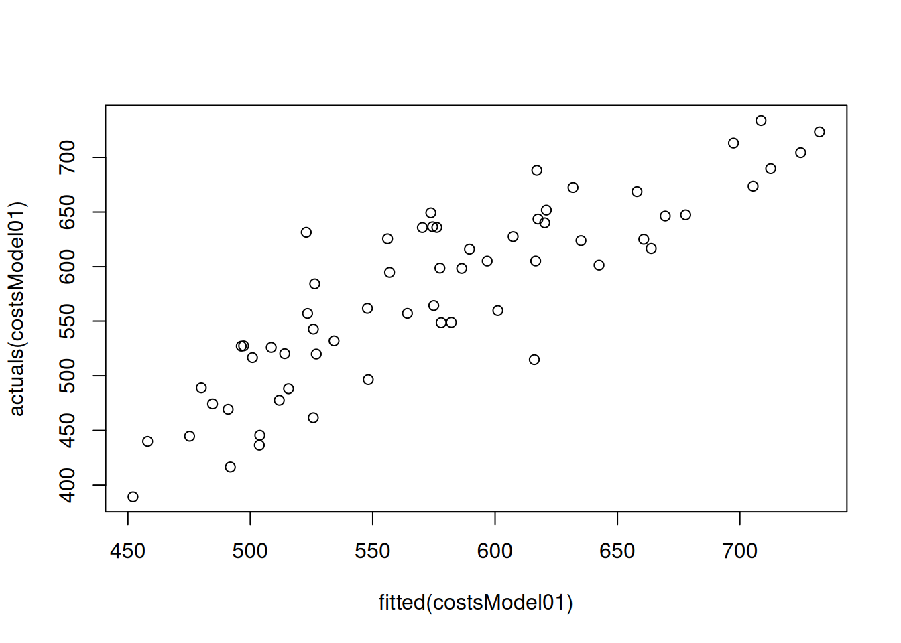

11.1 OLS estimation
We have already discussed the idea of the OLS in Section 10.1 on the example of the Simple Linear Regression. The logic with the multiple one is exactly the same: we want to minimise the sum of squared errors by changing the values of parameters. The main difference now is that we can have more than two parameters and as a result, the formulae become more complicated.
11.1.1 Application
Luckily, you do not need to know any formula to calculate the estimates of parameters and should not need to use it in real life, because it is used in all statistical software, including lm() function from stats package for R. If you want to know the maths behind this, it is explained in Subsection 11.1.2.
Here is an example of the model estimation via OLS with the same dataset:
After running the above command, we will get a model with some estimates of parameters:
## (Intercept) size materials projects year
## 614.3227252 1.3471347 0.8706179 -1.5921311 -0.1601849To better understand what fitting such model to the data implies, we can produce a plot of fitted vs actuals values, with \(\hat{y}_j\) on x-axis and \(y_j\) on the y-axis:

The same plot is produced via plot() method if we use alm() function from greybox instead:
costsModel02 <- alm(overall~size+materials+projects+year,
SBA_Chapter_11_Costs, loss="MSE")
plot(costsModel02,1)Figure 11.3: Actuals vs fitted values for multiple linear regression model on mtcars data.
We use loss="MSE" in this case, to make sure that the model is estimated via OLS. We will discuss the default estimation method in alm(), likelihood, in Section 16.
The plot on Figure 11.3 can be used for diagnostic purposes and in ideal situation the red line (LOWESS line) should coincide with the grey one, which would mean that we have correctly capture the tendencies in the data, so that all the regression assumptions are satisfied (see Chapter 15).
11.1.2 A bit of maths
There are several ways how we can get the formula for the OLS of the Multiple Linear Regression. We could start with the same SSE value, expanding it based on the equation of the regression (11.4): \[\begin{equation*} \mathrm{SSE} = \sum_{j=1}^n (y_j - \hat{y}_j)^2 = \sum_{j=1}^n (y_j - b_0 - b_1 x_{1,j} - b_2 x_{2,j} - \dots - b_{k-1} x_{k-1,j})^2 . \end{equation*}\] Taking derivatives of SSE with respect to \(b_0\), \(b_1\), \(b_2\), \(\dots\), \(b_{k-1}\) and then equating them to zero, we would get a so-called System of Normal Equations (we have discussed it when providing a proof in Section 10.1), which in general case has form: \[\begin{equation*} \begin{aligned} & \sum_{j=1}^n y_j - n b_0 - b_1 \sum_{j=1}^n x_{1,j} - b_2 \sum_{j=1}^n x_{2,j} - \dots - b_{k-1} \sum_{j=1}^n x_{k-1,j} = 0 \\ & \sum_{j=1}^n y_j x_{1,j} - b_0 \sum_{j=1}^n x_{1,j} - b_1 \sum_{j=1}^n x^2_{1,j} - b_2 \sum_{j=1}^n x_{2,j} x_{1,j} - \dots - b_{k-1} \sum_{j=1}^n x_{k-1,j} x_{1,j} = 0 \\ & \sum_{j=1}^n y_j x_{2,j} - b_0 \sum_{j=1}^n x_{2,j} - b_1 \sum_{j=1}^n x_{1,j} x_{2,j} - b_2 \sum_{j=1}^n x^2_{2,j} - \dots - b_{k-1} \sum_{j=1}^n x_{k-1,j} x_{2,j} = 0 \\ \vdots & \sum_{j=1}^n y_j x_{k-1,j} - b_0 \sum_{j=1}^n x_{k-1,j} - b_1 \sum_{j=1}^n x_{1,j} x_{k-1,j} - b_2 \sum_{j=1}^n x_{2,j} x_{k-1,j} - \dots - b_{k-1} \sum_{j=1}^n x^2_{k-1,j} = 0 \end{aligned} \end{equation*}\] Solving this system of equations gives us formulae for parameters \(b_0\), \(b_1\), \(b_2\), \(\dots\), \(b_{k-1}\), that guarantee that the SSE is minimal.
However, there is a more compact and easier in logic way of getting the formulae, but it requires some basic knowledge of linear algebra. To explain it, we need to present the multiple linear regression in a more compact form. In order to do that we will introduce the following vectors: \[\begin{equation} \mathbf{x}'_j = \begin{pmatrix}1 & x_{1,j} & \dots & x_{k-1,j} \end{pmatrix}, \boldsymbol{\beta} = \begin{pmatrix}\beta_0 \\ \beta_{1} \\ \vdots \\ \beta_{k-1} \end{pmatrix} , \tag{11.5} \end{equation}\] where \('\) symbol is the transposition. This can then be substituted in (11.2) to get: \[\begin{equation} y_j = \mathbf{x}'_j \boldsymbol{\beta} + \epsilon_j . \tag{11.6} \end{equation}\] This form is just convenient, but it denotes exactly the same model as in equation (11.2). All we need to remember in case of the equation (11.6) is that it represents the sum of products of variables by their coefficients, just in a compact way.
But this is not over yet, we can make it even more compact, if we pack all those values with index \(j\) in vectors and matrices: \[\begin{equation} \mathbf{X} = \begin{pmatrix} \mathbf{x}'_1 \\ \mathbf{x}'_2 \\ \vdots \\ \mathbf{x}'_n \end{pmatrix} = \begin{pmatrix} 1 & x_{1,1} & \dots & x_{k-1,1} \\ 1 & x_{1,2} & \dots & x_{k-1,2} \\ \vdots \\ 1 & x_{1,n} & \dots & x_{k-1,n} \end{pmatrix}, \mathbf{y} = \begin{pmatrix} y_1 \\ y_2 \\ \vdots \\ y_n \end{pmatrix}, \boldsymbol{\epsilon} = \begin{pmatrix} \epsilon_1 \\ \epsilon_2 \\ \vdots \\ \epsilon_n \end{pmatrix} , \tag{11.7} \end{equation}\] where \(n\) is the sample size. This leads to the following even more compact form of the multiple linear regression: \[\begin{equation} \mathbf{y} = \mathbf{X} \boldsymbol{\beta} + \boldsymbol{\epsilon} . \tag{11.8} \end{equation}\] If you compare (11.8) with the original one (11.2): \[\begin{equation*} y_j = \beta_0 + \beta_1 x_{1,j} + \beta_2 x_{2,j} + \dots + \beta_{k-1} x_{k-1,j} + \epsilon_j , \end{equation*}\] you will probably see the connection. But the form (11.8) is just more abstract. This abstraction, however, allows us getting an analytical formula for the calculation of the estimates of parameters of the model (remember, we substitute the true values \(\beta_j\) by their sample estimates \(b_j\)): \[\begin{equation} \mathbf{b} = \left(\mathbf{X}' \mathbf{X}\right)^{-1} \mathbf{X}' \mathbf{y} . \tag{11.9} \end{equation}\]
One way to get a better understanding of this formula is to connect it with the one for the slope parameter in the Simple Linear Regression, which we discussed in Section 10.1: \[\begin{equation*} {b}_1 = \frac{\mathrm{cov}(x,y)}{\mathrm{V}(x)} . \end{equation*}\] In case of only one explanatory variable (simple linear regression), \(\mathbf{X}' \mathbf{y}\) in (11.9) would be equivalent to \(\mathrm{cov}(x,y)\), while \(\left(\mathbf{X}' \mathbf{X}\right)^{-1}\) would be \(\frac{1}{\mathrm{V}(x)}\).
Linear algebra! Tread lightly!
Proof. Sum of squared errors based on the model (11.8) applied to the data can be expressed as: \[\begin{equation*} \mathrm{SSE} = \mathbf{e}' \mathbf{e} = (\mathbf{y} - \mathbf{X} \mathbf{b})' (\mathbf{y} - \mathbf{X} \mathbf{b}) , \end{equation*}\] where \(\mathbf{e}\) is the estimate of \(\boldsymbol{\epsilon}\) and \(\mathbf{b}\) is the estimate of \(\boldsymbol{\beta}\). This can be expanded by opening brackets to: \[\begin{equation} \begin{aligned} \mathrm{SSE} = & \mathbf{y}'\mathbf{y} - \mathbf{y}' \mathbf{X} \mathbf{b} - \mathbf{b}' \mathbf{X}' \mathbf{y} + \mathbf{b}' \mathbf{X}' \mathbf{X} \mathbf{b} = \\ & \mathbf{y}'\mathbf{y} - 2 \mathbf{b}' \mathbf{X}' \mathbf{y} + \mathbf{b}' \mathbf{X}' \mathbf{X} \mathbf{b} \end{aligned} , \tag{11.10} \end{equation}\] which can be done because \(\mathbf{y}' \mathbf{X} \mathbf{b}\) is a scalar and \(\mathbf{y}' \mathbf{X} \mathbf{b} = (\mathbf{y}' \mathbf{X} \mathbf{b})' = \mathbf{b}' \mathbf{X}' \mathbf{y}\). Now we need to minimise (11.10) with respect to parameters to find their estimates. This can be done by taking derivative of (11.10) with respect to \(\mathbf{b}\) and equating it to zero: \[\begin{equation} \frac{\partial \mathrm{SSE}}{\partial \mathbf{b}} = - 2 \mathbf{X}' \mathbf{y} + 2 \mathbf{X}' \mathbf{X} \mathbf{b} = 0. \tag{11.11} \end{equation}\] After that, we can regroup the elements in (11.11) to get: \[\begin{equation*} \mathbf{X}' \mathbf{X} \mathbf{b} = \mathbf{X}' \mathbf{y}. \end{equation*}\] And then, we can multiply both parts of the equation by the inverse of \(\mathbf{X}' \mathbf{X}\) to get rid of that part in the left-hand side of the equation: \[\begin{equation*} (\mathbf{X}' \mathbf{X})^{-1} \mathbf{X}' \mathbf{X} \mathbf{b} = (\mathbf{X}' \mathbf{X})^{-1} \mathbf{X}' \mathbf{y}, \end{equation*}\] which then leads to the final formula: \[\begin{equation*} \mathbf{b} = \left(\mathbf{X}' \mathbf{X}\right)^{-1} \mathbf{X}' \mathbf{y} . \end{equation*}\]
11.1.3 Properties of the OLS Estimators
There are several important properties of the OLS estimated regression that are worth keeping in mind (we discussed some of them specifically for the Simple Linear Regression in Section 10.3):
- The mean of residuals of the model is always equal to zero as long as it contains intercept.
- The explanatory variables in the model are not correlated with the residuals of the model.
- The mean of the fitted values coincides with the mean of the actual values.
They all follow directly from the derivation of the OLS formula.
Linear algebra! Tread lightly!
Proof. Consider the system of normal equations \[\begin{equation} \left(\mathbf{X}' \mathbf{X}\right) \mathbf{b} = \mathbf{X}' \mathbf{y} . \tag{11.12} \end{equation}\] Given that we estimated the model in sample, we can rewrite the multiple linear regression as: \[\begin{equation*} \mathbf{y} = \mathbf{X} \boldsymbol{b} + \boldsymbol{e} \end{equation*}\] and substitute it in (11.12) to get: \[\begin{equation} \left(\mathbf{X}' \mathbf{X}\right) \mathbf{b} = \mathbf{X}' \mathbf{X} \boldsymbol{b} + \mathbf{X}' \boldsymbol{e} . \tag{11.13} \end{equation}\] Equation (11.13) implies that \(\mathbf{X}' \boldsymbol{e}=0\), which given how the matrix \(\mathbf{X}\) is formed prooves the first two properties:
- The first column of the matrix (which contains ones) corresponds to the intercept and the multiplication of it by the error implies that \(\sum_{j=1}^n e_j =0\), which also means that the mean of the residuals is zero as well: \(\bar{e}=0\);
- All the other columns contain the explanatory variables and for each one of them this comes to the equation: \(\sum_{j=1}^n x_{i,j} e_j\) for all \(i=\{1, \dots, k-1\}\). Given that the first property holds, the same equation can be rewritten to: \[\begin{equation*} \begin{aligned} & \sum_{j=1}^n x_{i,j} (e_j - \bar{e}) = \sum_{j=1}^n (x_{i,j} - \bar{x}_i) (e_j - \bar{e}) = & \sum_{j=1}^n (x_{i,j} - \bar{x}_i) (e_j - \bar{e}) + \bar{x}_i \sum_{j=1}^n (e_j - \bar{e}) \end{aligned} \end{equation*}\] The right hand side of this equation equals to zero due to the first property, which implies that: \[\begin{equation} \sum_{j=1}^n x_{i,j} e_j = \sum_{j=1}^n (x_{i,j} - \bar{x}_i) (e_j - \bar{e}), \tag{11.14} \end{equation}\] which is the covariance between the residuals and the explanatory variable \(x_i\). And because the equation (11.13) implies that \(\sum_{j=1}^n x_{i,j} e_j=0\), the covariance (11.14) should be equal to zero as well.
Finally, it is easy to show the third property. All we need to do is to take the mean of the response variable: \[\begin{equation*} \mathrm{E}(\mathbf{y}) = \mathrm{E}(\mathbf{X} \boldsymbol{b} + \boldsymbol{e}) = \mathrm{E}(\mathbf{X} \boldsymbol{b}) + \mathrm{E}(\boldsymbol{e}) , \end{equation*}\] where the expectation of the error term equals to zero, implying that: \[\begin{equation*} \mathrm{E}(\mathbf{y}) = \mathrm{E}(\mathbf{X} \boldsymbol{b}) = \mathrm{E}(\hat{\mathbf{y}}) . \end{equation*}\]
These three properties are useful because, first, they show that it does not make sense to test whether they hold or not, with OLS they will be satisfied automatically, and second they allow measuring quality of the fit via the squares of regression, which will be discussed in Section 11.2.
11.1.4 Gauss-Markov theorem
OLS is a very popular estimation method for linear regression for a variety of reasons. First, it is relatively simple (much simpler than other approaches) and conceptually easy to understand. Second, the estimates of OLS parameters can be found analytically (using formula (10.6)). Furthermore, there is a mathematical proof that the OLS estimates of parameters are efficient (Subsection 6.3.2), consistent (Subsection 6.3.3) and unbiased (Subsection 6.3.1). The theorem that states that is called “Gauss-Markov theorem”, here is one of versions of it:
Theorem 11.1 If regression model is correctly specified then OLS will produce Best Linear Unbiased Estimates (BLUE) of parameters.
The term “correctly specified” implies that all main statistical assumptions about the model are satisfied (such as no omitted important variables, no autocorrelation and heteroscedasticity in the residuals, see details in Chapter 15). The “BLUE” part means that OLS guarantees the most efficient and the least biased estimates of parameters amongst all possible estimators of a linear model. For example, if we used a criterion of minimisation of Mean Absolute Error (MAE), then the estimates of parameters would be less efficient than in case of OLS. This is because OLS gives “mean” estimates, while the minimum of MAE corresponds to the median (see Subsection 6.3.2).
Practically speaking, the theorem implies that when you use OLS, the estimates of parameters will have good statistical properties (given that the model is correctly specified), in some cases better than the estimates obtained using other methods.